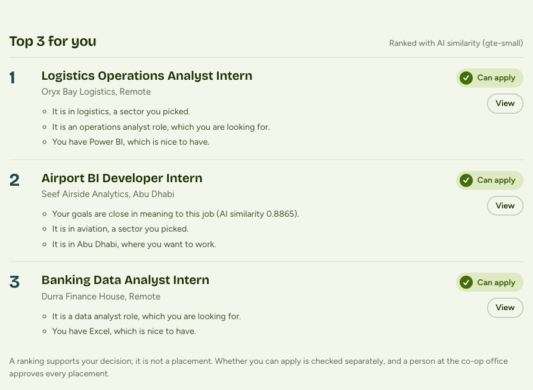
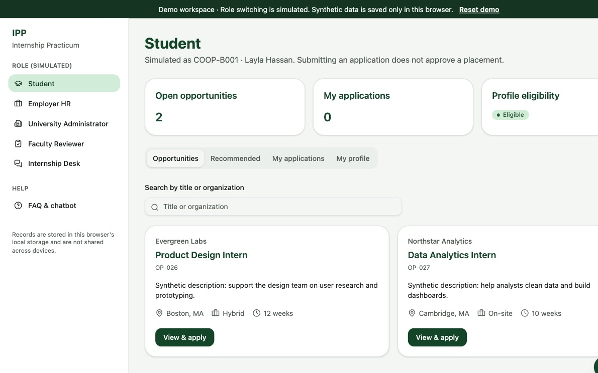
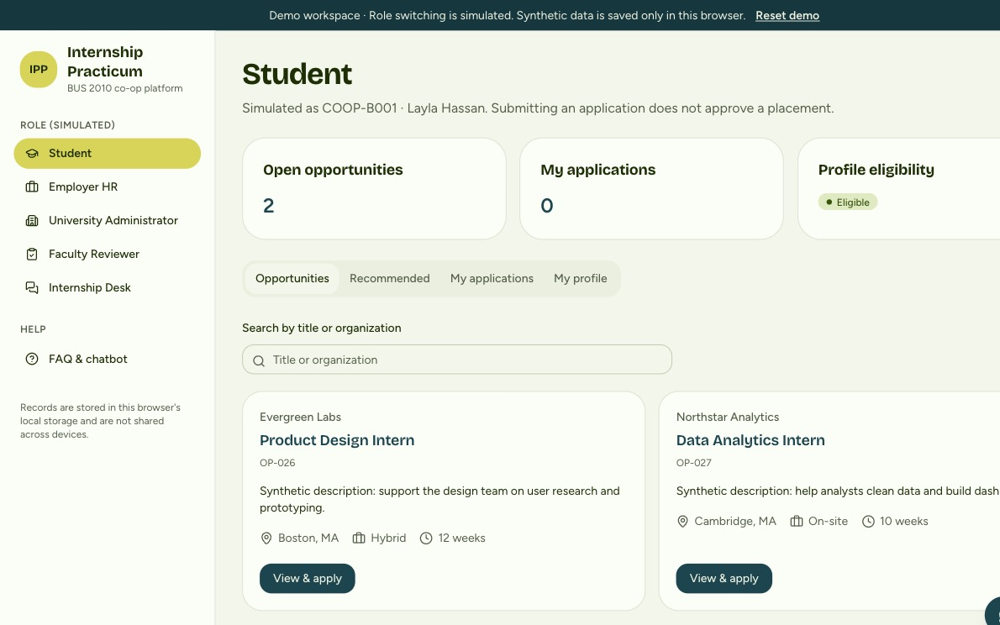

BUS2010 co-op platform, Sprint 3 review · Team 5, project P05 · 24 November 2026
Coop Internship Project
P05 Opportunity Matcher: one shared database, one look, AI for every team’s students.
Alghala Almansoori, Maha Abdulla, Che Liu, Leonard Jiang Mingming, Yonghan Yang
This sprint
1
Team 1 writes students into the shared database, and P05 ranks them.
2
A student added by any team gets live AI scores, not a fallback.
3
The shared IPP app gets one look, as the professor asked.
1. cover We are Team 5, project P05, AI-assisted matching. Sprint 3 was about integration: making our part work with everyone else’s. Three things happened. Another team, Team 1, now writes students into the shared database we host, and our matching ranks them without any manual step. A student added by any team gets real AI scores straight away, computed live by the model. And we answered the professor’s request to make the app look unified, with a pull request that gives the whole shared app one look.
Technology stack
Tools used by our team
Supabase
The shared database for all seven teams: one key per team, read views, a table of AI embeddings, and a small cloud function for live AI scores.
gte-small model
A pretrained sentence-embedding model, not trained by us. It compares the meaning of a student’s goal with each internship.
GitHub
Our code and live prototype (GitHub Pages), plus pull requests to the class’s shared IPP app.
Shared IPP app
The common app every team merges into: TanStack Start, React, Tailwind. We restyled it and added P05 to its navigation.
Claude Code
Building and checking the database, the prototype, the guide for other teams and these slides.
Team coordination
[Team chat and task board: the team to confirm before presenting]
Team 5, P05 Opportunity Matcher
2
2. tools Our stack this sprint. Supabase hosts the shared database for all seven teams, with one write key per team, read views, the stored AI embeddings and a small cloud function that computes AI scores live. The AI itself is gte-small, a pretrained sentence-embedding model; we did not train anything. GitHub holds our code and the live prototype, and we used it to send pull requests to the class’s shared app, which is built with TanStack Start and React. Claude Code helped us build and test all of it. [Say which chat and task board the team used.]
Key user stories completed in Sprint 3
Three stories, each checked on live data
US 1 · Partner team
We read and write one shared database with our own key
so that all seven modules use the same records.
Done when
Each table has one owner, writes need that team’s key, and versions are only added.
Evidence
Team 1 wrote Mira Haddad (COOP-P001): 3 profile versions, 9 skills. 16 of 16 live checks pass.
US 2 · Student added by another team
I get AI-ranked internships with reasons straight away
so that P05 works on everyone’s data, not only ours.
Done when
Both methods rank her, the AI uses the real model, and who can apply never changes.
Evidence
Mira: 16 internships she can apply to, 29 with one thing to do. Her goal is scored live against 351 job versions.
US 3 · Anyone using the app
I see one consistent app across every team’s pages
so that the platform feels like one product.
Done when
One palette, type and set of status colours on every page, no module rewritten, 73 tests pass.
Evidence
Pull requests #2 (one look) and #3 (P05 in the navigation) to the shared app.
Team 5, P05 Opportunity Matcher
3
3. stories Three user stories, each with its acceptance criteria and evidence we checked on live data. First, for partner teams: one shared database where each team writes its own tables with its own key. Team 1 already did: they created a student, Mira Haddad, with three profile versions and nine skills. Second, for a student created by another team: she gets AI-ranked internships with reasons straight away. Mira can apply to 16 internships now and 29 more need one thing from her; because her goal was new, the model scored it live against every internship. Third, for anyone using the app: one consistent look across every team’s pages, which is in our pull request to the shared app.
Project demo
Team 1 created Mira. P05 ranks her live.

Live links
Prototype thecyper.github.io/bus2010-p05-opportunity-matcher
Shared app pull request #2, ipp-coop-2026/ipp-coop
Key journeys
- Mira, created by Team 1, ranked by P05 with live AI scores
- Layla’s unverified Jira sent to skills training, then refreshed
- The coordinator confirms or rejects an AI skill suggestion
How the MVP solves the problem
Every student sees which internships fit now, why, and the one thing to do for the rest. A person still approves every placement.
Team 5, P05 Opportunity Matcher
4
4. demo Live demo. I search for Mira Haddad, a student that Team 1 created in the shared database. With the AI method on, P05 shows her top 3. The second one, Airport BI Developer, is there because her goal is close in meaning to the job: similarity 0.89, computed live because her text is new. Then the familiar journey with Layla: her Jira is unverified, she sends it to skills training, the review comes back, and her matches refresh with the old result kept. Last, the coordinator view, where a person confirms or rejects what the AI suggests. The problem we solve: every student sees what fits now, why, and the one thing to do for the rest, while a person still approves every placement. If the live demo fails, this screenshot shows the same state.
Showcase your MVP component · Professor’s request: “Please make your app look unified”
One look for the shared IPP app
Before
Student page as the shared app looked on 23 November

After
The same page with pull request #2

Changed through the shared design tokens: every team’s page updates at once, no module is rewritten, and all 73 tests pass.
Team 5, P05 Opportunity Matcher
5
5. unified The professor asked every team to make the app look unified. The class has one shared app that started from Team 1’s project, and it still had the generic look the tool generated. We gave the whole app one look through its shared design tokens: the same paper background, teal and lime as our prototype, our two typefaces, flat surfaces and a small set of status colours that always come with a word. Because it is done through tokens, every team’s page changes at once and no one’s module has to be rewritten; the app’s 73 tests still pass. It is pull request number 2 on the shared repository, and number 3 adds our module to its navigation.
Retrospective: SoS liaison and team
What cross-team work taught us
Cross-team communication
What helped
A guide whose examples we had run on the live data, and a sandbox to practise in. Team 1 wrote its first records on the day the guide was shared.
What hurt
Decisions were spread across chat, the guide and a new repository. We learned about the common repository only when it appeared on 23 November.
What we change
Join the merge plan with named integrators, log every schema change as a migration and a decision, and give each open question one owner and a date.
Team learning
A data contract beats a polished screen
The hardest Sprint 2 problem was field names, not the algorithm.
Test the claims, not only the code
Running every example in our guide caught a broken one before other teams copied it.
Keep AI bounded and labelled
New text used to fall back silently to word matching; now it gets a real score, and a fallback says “simulated”.
Team 5, P05 Opportunity Matcher
6
6. retro Retrospective. Across teams, what helped was a guide with examples we had actually run, and a sandbox where other teams can practise; Team 1 wrote its first records the same day the guide was shared. What hurt was that decisions lived in too many places, chat, the guide and a new repository, and we only learned about the common repository when it appeared. For the final sprint we will join the merge plan with named integrators, log every schema change as a migration and a decision, and give each open question an owner and a date. As a team, we learned that a data contract matters more than a polished screen, that testing our own claims catches mistakes before others copy them, and that AI should stay bounded and clearly labelled.
Key impediment from Sprint 2 · Risk and mitigation
P05 could not read other teams’ student data
| Field | Entry |
|---|---|
| ID | IMP-01 |
| Description | Team 1’s app kept its own records: other field names, 14 skill IDs against the shared 44, and OP-026 meant a different job. |
| Impact | No recommendations for students created in another module; P01 and P05 could not start integration tests. |
| Detected on | 16 November 2026, at the first cross-team handoff |
| Responsible | P01 and P05 integrators |
| Resolution | The shared database is the data contract: agreed tables with one owner each, a field mapping and a tested guide. |
| Escalation | Scrum of Scrums merge plan: P05 builds the shared read client, 28 November to 4 December. |
| Status | Partly resolved: P01 to P05 through the database works; the shared app still shows its local seed records. |
| Resolved on | 23 November 2026 for P01 to P05; the read client for every team follows |
Team 5, P05 Opportunity Matcher
7
7. impediment Our key impediment from Sprint 2 is the very example in the template: P05 could not read other teams’ student data. Team 1’s app kept its own records with other field names, a different list of skill IDs, and even the same opportunity ID meaning a different job. So we could not recommend anything for students created in another module, and integration testing with P01 could not start. We found it at the first handoff on 16 November. The resolution was to make the shared database the data contract: agreed tables, one owner per table, a written mapping and a guide whose examples are tested. It is partly resolved: P01 to P05 through the database works since 23 November, and the Scrum of Scrums merge plan gives us the next step, a shared read client that every team’s pages can use, by early December.